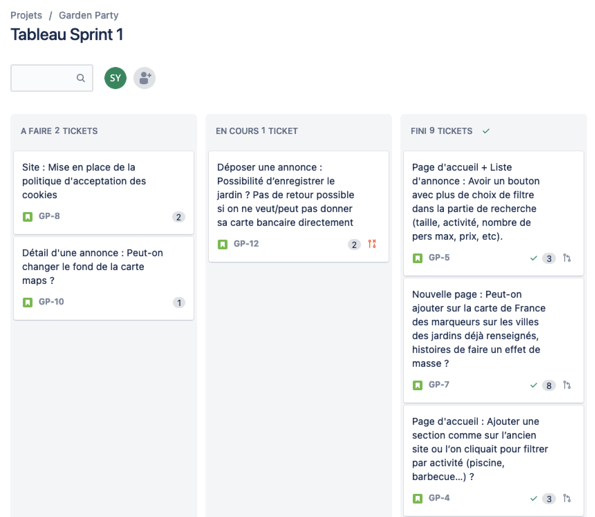
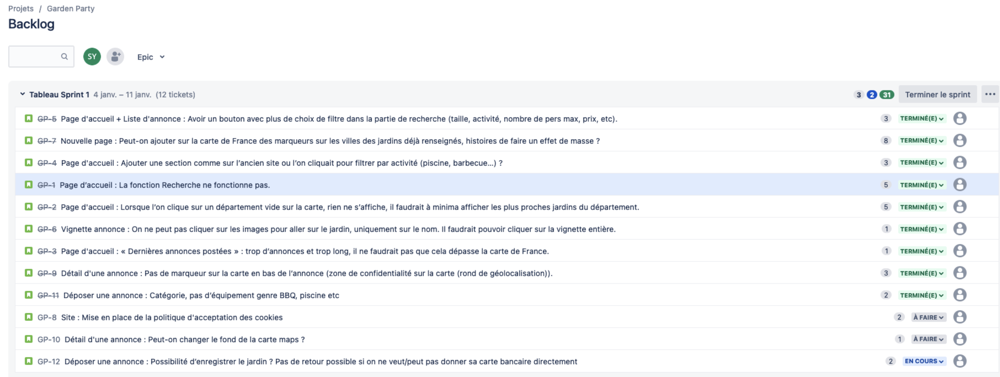
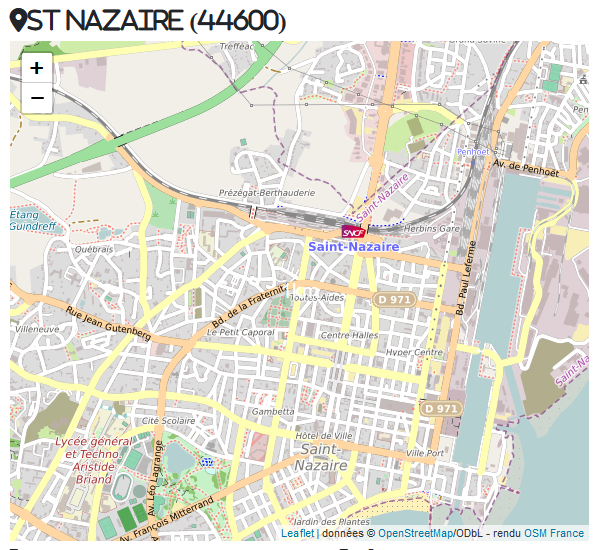
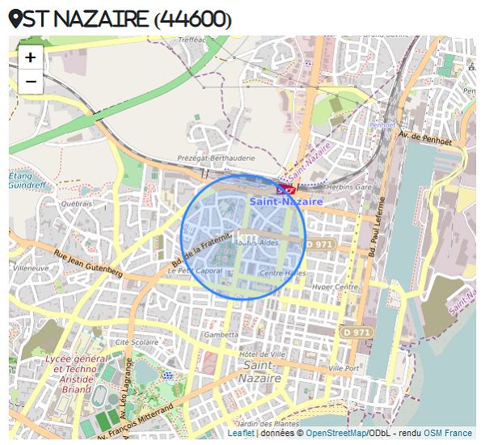
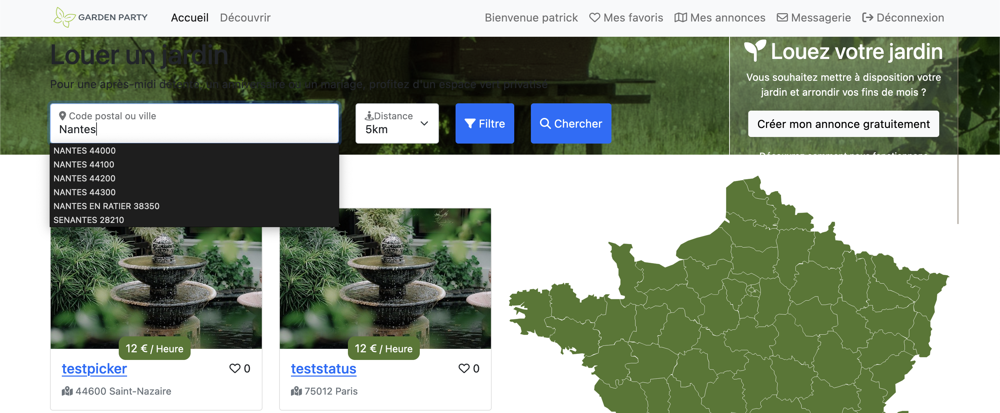
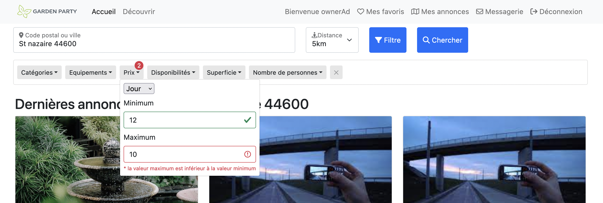
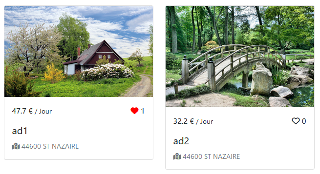
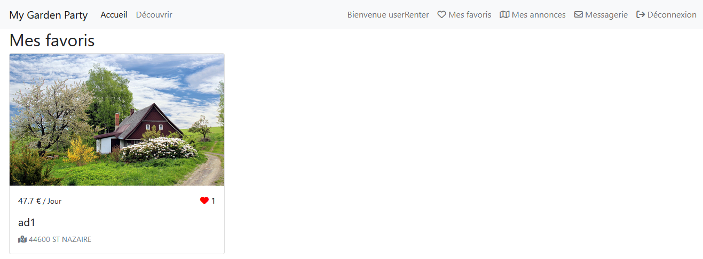

J'ai réalisé mon second stage de BTS SIO dans la même entreprise que le premier à Digitalusor à Saint-Nazaire.
Lors de ce stage j'ai continué à travailler sur le même projet de développement du site de locations de jardins "Garden Party".
Globalement, j'ai dû répondre aux diverses demandes d'évolution de la plateforme.
Développement de la fonctionnalité de recherche d'annonces. Barre de recherche avec autocomplétion et filtrages
Développement d'une fonctionnalité de mise en favoris des annonces
Développement de la sélection des dates de réservation des annonces
Sur cette nouvelle étape du projet la méthode agile a été utilisée avec l'outil de planification des tâches Jira Issue. Jira Issue est un outil de communication entre le client et l'équipe de développement. Le client est au coeur du projet : il emet des tickets à l'équipe de dévelopement pour demander des évolutions ou faire part de problèmes à résoudre. Les développeurs peuvent aussi écrire des commentaires sous une demande afin de progresser.
Afin de résoudre les différentes problématiques j'ai organisé mon travail selon la difficulté des tâches en les évaluant.
Les problèmes simples sont traités en premier afin de ne pas rester bloqué.


Le but de cette tâche a été d'apporter des modifications sur la carte de France de la page d'accueil.
Les départements contenant des annonces apparaissent en vert tandis que les vides apparaissent en gris. Pour ce faire, j'ai créé une fonction dans le modèle de la classe Department qui retourne les departements vides.
Ensuite j'ai rendu cliquable les départements pour visualiser les annonces. Si le department est vide alors les offres les plus proches sont affichées à l'aide d'une autre fonction DQL qui recherche les offres les plus proches en exploitant les coordonnées gps (latitude & longitude).
J'ai mis en place un système de localisation approximative des offres. Le but est de voir la localisation sans révéler l'adresse exacte pour protéger le client et éviter les négociations externes à la plateforme. Cela se visualise sur la carte par un cercle d'un Km dans le périmètre de l'annonce. Pour mettre en place cette fonction j'ai attribué des données gps légèrement modifiées en base de données. Ensuite, j'ai exploité ces données avec l'API (Application Programming Interface) Leaflet qui est une API javascript de cartographie.


Au préalable, j'ai migré des données provenant d'un fichier CSV contenant toutes les villes de France dans la bd en m'aidant d'Excel pour formater des requêtes SQL. Ensuite, j'ai developpé l'autocomplétion avec requête AJAX et l'utilisation de slug (identifiant unique).
Pour conclure cette tâche, j'ai réutilisé la requête de selection par distance.

Avant de développer la partie filtres de recherche, j'ai esquissé la mise en forme sur le logiciel Balsamiq pour la faire valider par mon superviseur.
j'ai développé des filtres de recherche pour trier les annonces selon les critères suivant : catégories, équipements, prix, disponibilités, superficie, nombre de personnes conseillé. j'ai d'abord mis en forme les filtres (bootstrap, html/css) puis j'ai vérifié les inputs avec du JS et des regex. Et enfin, j'ai greffé à la requête de recherche principale une requête optionnelle pour chaques filtres.

J'ai mis en place un système de favoris qui permet à l'utilisateur de liker des annonces pour les mettre de côté sur son compte. Pour y parvenir, j'ai créé une nouvelle relation entre l'entité utilisateur et l'entité annonce avec la console de symfony, puis une fonction asynchrone permet d'ajouter ou de retirer une annonce aux favoris.

Enfin, j'ai mis à disposition une page qui affiche l'ensemble des favoris.

Pour conclure, je suis extrêmement satisfait de ce stage, car grâce à lui, j'ai pu consolider mes compétences en programmation, tout en ayant une nouvelle perspective de la gestion en projet dans le domaine professionnel.